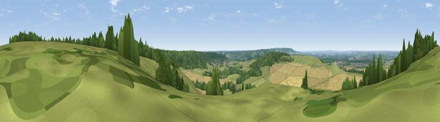

Viewpoint near Aldbury
#17283 in England · top 14% of its area beats it · near Aldbury · open accessWhere it is
The exact computed spot (SP 96325 14725). Click the marker for map links.
Public access: this spot lies on mapped open-access land (CRoW Act 2000) — you may roam here on foot. Computed from Natural England's CRoW access layer and OpenStreetMap rights of way — not the legal definitive map. Always verify locally.
The view, rendered

A 360° render of this exact spot computed from the terrain model, tree cover and land cover — summer colours, afternoon light, calibrated against photographs of famous viewpoints. Real trees, hedges and buildings will differ in detail.
The panorama
Grey silhouette: terrain skyline in each direction (720 bearings, Earth curvature and refraction included). Dashed green: skyline with trees (+15 m) and buildings (+8 m) as obstacles. Blue strip: how far the ground is visible on each bearing.
Where the view opens
Wedge length = distance to the farthest visible ground on that bearing (vegetation-aware). Rings at 10, 25 and 50 km.
What fills the view
42% grassland · 36% cropland · 21% woodland · 1% built-up
Angular shares of the visible panorama (visual magnitude), not map area. Landscape diversity 0.49 (0–1 Shannon).
Key numbers
More beautiful places nearby
The staircase of upgrades: each row has a higher view potential than everything closer. Driving times are estimates from straight-line distance, calibrated against real road routing — check an actual route before setting out.
| Place | Direction | Drive | Score |
|---|---|---|---|
| Paul’s Knob | W · 1 km | ~3 min | 58.6 |
| Viewpoint near Tring Station | WSW · 1 km | ~4 min | 68.5 |
| Beacon Hill | N · 2 km | ~6 min | 74.1 |
| Viewpoint near Halton | WSW · 9 km | ~18 min | 74.3 |
| Coombe Hill Monument | SW · 14 km | ~25 min | 75.5 |
| Viewpoint near Woolstone | WSW · 72 km | ~96 min | 76.7 |
| Viewpoint near Meon Vale | WNW · 84 km | ~109 min | 77.0 |
| Broadway Hill | WNW · 87 km | ~112 min | 77.7 |
51.82285, -0.60380 · source: screening · position refined by local search. Computed location — check access rights before visiting.